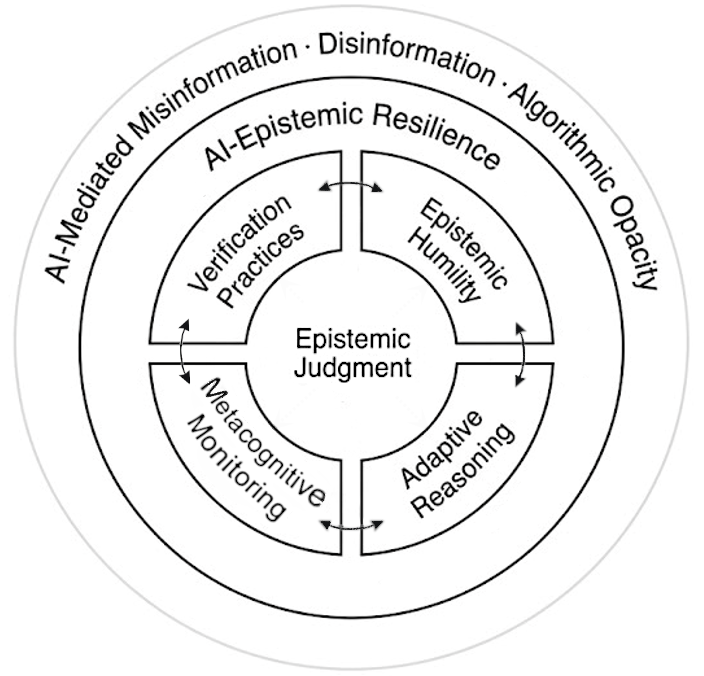

Module 1
Introduction to AI-Epistemic Resilience
Learning Objectives
- Define AI-Epistemic Resilience and distinguish it from related ideas such as critical thinking, media literacy, and epistemic vigilance.
- Explain why AI-generated content produces a distinctive kind of uncertainty, the gap between fluency and fidelity.
- Name the four regulatory elements of the AI-ER framework and explain why they operate as a dynamic system rather than a fixed sequence or a checklist.
- Begin recognizing these elements in your own interactions with AI.
What is AI-Epistemic Resilience?
Artificial intelligence is reshaping how we find, create, and trust information. Tools like ChatGPT or image generators can produce fluent, confident-sounding answers in seconds. The challenge is that sometimes those answers are wrong, misleading, or entirely fabricated.
This produces a distinctive kind of uncertainty. The output looks polished and persuasive, yet it is not anchored in reliable sources. Unlike a typo or an obvious mistake, this uncertainty is hard to catch precisely because the output sounds right. It lives in the gap between fluency, how confidently something is stated, and fidelity, how well it matches reality. Learning to operate inside that gap is the heart of this course.
Why traditional tools are not enough
You may already be familiar with skills like:
- Critical thinking, evaluating arguments for logic and coherence.
- Media literacy, checking sources and identifying bias.
- Credibility checking, judging whether a person or source is trustworthy, sometimes called epistemic vigilance.
These skills remain essential. But they were built for a world where information usually came from identifiable human authors. AI-generated content is different. It often has no clear author, no obvious bias to spot, and no easy trail of evidence to follow.
Enter AI-Epistemic Resilience (AI-ER)
AI-Epistemic Resilience is the capacity to sustain, adapt, and refine knowledge practices in response to AI-generated error, distortion, and uncertainty, preserving autonomy while making constructive use of algorithmic tools (Finley, 2026). In other words, it is about keeping your thinking strong even when the information environment becomes uncertain.
The framework rests on four interdependent regulatory elements:
These elements do not work in isolation or in a fixed order. They form a dynamic system, continuously shaping and refining one another, so that together they let you use AI wisely without becoming dependent on it.

<img src="assets/images/processimage.png" alt="The four regulatory elements arranged in a continuous loop around a central node, epistemic judgment, with bidirectional arrows and an outer ring of broader challenges.">
Trusting the Machine
Recall a recent time you used an AI tool for something that mattered. Respond to each prompt in a few sentences.
- What did you ask, and what did the system give you?
- Did you verify any part of the response? If so, how. If not, what made verification feel unnecessary? (Verification Practices)
- Were there points where you assumed the output was right because it sounded authoritative? Looking back, was that assumption warranted? (Epistemic Humility)
- If the output had conflicted with something you knew, how would you have adjusted? (Adaptive Reasoning)
- As you worked, were you tracking how the AI was shaping your conclusions, or did you notice only afterward? (Metacognitive Monitoring)
The aim is to notice that you were probably already practicing some of these elements unevenly. The framework helps you do so deliberately and consistently.
What is next
Module 2 traces the epistemic traditions AI-ER builds on, so you can see what is genuinely new about reasoning alongside AI and what draws on long-standing practice.
References
Finley, R. V. (2026). AI-Epistemic Resilience: A Framework for Knowledge Integrity in the Age of Artificial Intelligence. Self-published.